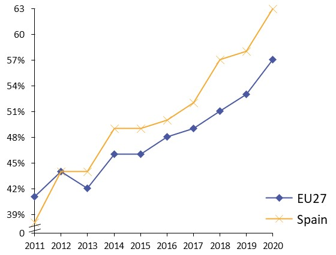
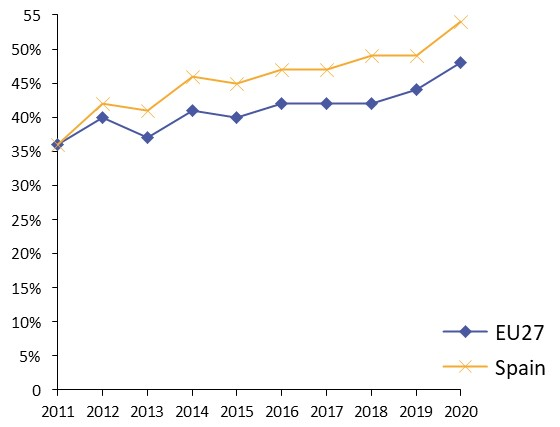
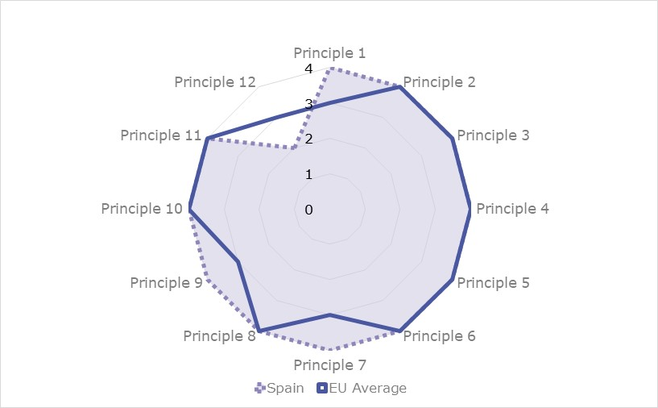
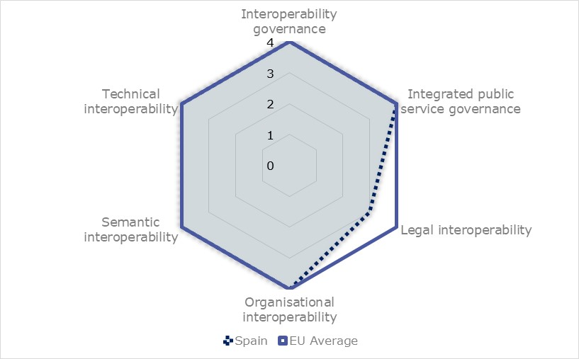
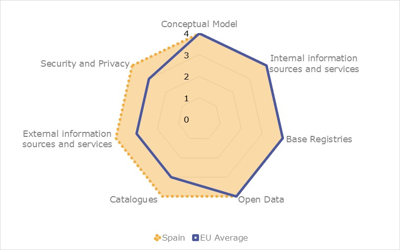

ISA2

 Table of Contents
Table of ContentsDigital Public Administration factsheet 2021
Spain
2 Digital Government Highlights 9
3 Digital Government Political Communications 11
4 Digital Government Legislation 18
5 Digital Government Governance 26
6 Digital Government Infrastructure 37
7 Digital Government Services for Citizens and Businesses 48
Please note that the data collection exercise for the update of the 2021 edition of the Digital Public Administration factsheets took place between March and June 2021. Therefore, the information contained in this document reflects this specific timeframe.

Country
Profile
1
Population: 47 134 837 inhabitants (2019)
GDP at market prices: 1 121 698 (2020)
GDP per inhabitant in PPS (Purchasing Power Standard EU 27=100): 86
GDP growth rate: -10.80%
Inflation rate: -0.3
Unemployment rate: 15.1
General government gross debt (Percentage of GDP): 120
General government deficit/surplus (Percentage of GDP): -11
Area: 505990 km2
Capital city: Madrid
Official EU language: Spanish
Currency: Euro
Source: Eurostat (last update: June 2021)
The following graphs present data for the latest Digital Public Administration Indicators for Spain compared to the EU average. Statistical indicators in this section reflect those of Eurostat at the time the Edition is being prepared.
Percentage of individuals using the internet for interacting with public authorities in Spain  | Percentage of individuals using the internet for obtaining information from public authorities in Spain  | ||
Percentage of individuals using the internet for downloading official forms from public authorities in Spain
| Percentage of individuals using the internet for sending filled forms to public authorities in Spain
| ||
In 2017, the European Commission published the European Interoperability Framework (EIF) to give specific guidance on how to set up interoperable digital public services through a set of 47 recommendations. The picture below represents the three pillars of the EIF around which the EIF Monitoring Mechanism was built to evaluate the level of implementation of the EIF within the Member States. It is based on a set of 71 Key Performance Indicators (KPIs) clustered within the three main pillars of the EIF (Principles, Layers and Conceptual model), outlined below.

Source: European Interoperability Framework Monitoring Mechanism 2020
For each of the three pillars, a different scoreboard was created to breakdown the results into their main thematic areas (i.e. the 12 principles of interoperability, the interoperability layers and the components of the conceptual model). The thematic areas are evaluated on a scale from one to four, where one means a lower level of implementation and 4 means a higher level of implementation. The graphs below show the result of the second EIF Monitoring Mechanism data collection exercise for Spain in 2020.

Source: European Interoperability Framework Monitoring Mechanism 2020
Spain’s results in Scoreboard 1 show an overall high implementation of the EIF Principles, scoring above the European average for Principle 1 (Subsidiarity and Proportionality), 7 (Inclusion and Accessibility) and 9 (Multilingualism). The only area of improvement concerns the Principle 12 (Assessment of Effectiveness and Efficiency), for which the score of 2 shows a lower-medium performance in the implementation of effectiveness and efficiency evaluations on interoperability solutions and technological options (Recommendation 19) which could be bettered to reach the maximum score of 4.

Source: European Interoperability Framework Monitoring Mechanism 2020
The Spanish results for the implementation of interoperability layers assessed for Scoreboard 2 show an overall good performance with a majority of scores of 4. The remaining potential area of improvement to enhance the country’s implementation of the recommendations under Scoreboard 2, are related to legal interoperability. Specifically, the score of 3 for Spain in Recommendation 27, stating that when drafting legislation to establish a European public service, the country should perform a ‘digital check’ and consider data protection requirements, lowers the legal interoperability result for Spain.

Source: European Interoperability Framework Monitoring Mechanism 2020
Spain’s scores assessing the Conceptual Model in Scoreboard 3 show a high performance in the implementation of all recommendations with scores of 4 in all areas. Concretely, Spain performs above the EU average in the areas of catalogues, external information sources and services and security and privacy. However, some improvements can be made in implementing recommendations related to the base registries approach. Precisely, the score of 3 on the availability of authoritative sources of information and the use of control mechanisms to ensure security and privacy in accordance with the relevant legislation (Recommendation 37) and on the development of interfaces with base registries and authoritative sources of information (Recommendation 38) could be improved to reach the maximum score of 4.
Additional information on Spain’s results on the EIF Monitoring Mechanism is available online through interactive dashboards.
The graph below presents the main highlights of the latest eGovernment Benchmark Report, an assessment of eGovernment services in 36 countries: the 27 European Union Member States, as well as Iceland, Norway, Montenegro, the Republic of Serbia, Switzerland, Turkey, the United Kingdom, Albania and Macedonia (referred to as the EU27+).
The study evaluates online public services on four dimensions:
The 2021 report presents the biennial results, achieved over the past two years of measurement of all eight life events used to measure the above-mentioned key dimensions. More specifically, these life events are divided between six ‘Citizen life events’ (Career, Studying, Family life, measured in 2020, and Starting a small claim procedure, Moving, Owning a car, all measured in 2019) and two ‘Business life events’ (Business start-up, measured in 2020, and Regular business operations, measured in 2019).

Source: eGovernment Benchmark Report 2020 Country Factsheets
Digital Public Administration Highlights
2
Digital Public Administration Political Communications
The Spanish Government presented in January 2021 the Public Administrations Digitisation Plan 2021-25. This plan is one of the strategic axes of the digital transformation aimed by the Digital Spain 2025 strategy and key in the Recovery, Transformation and Resilience Plan.
In January 2021 it was also presented the National Plan for Digital Competences. This plan is oriented to the reduction of the different digital gaps and train citizens for future professional environments. It includes an specific action line (number 5) for training in digital competences for public sector employees.
In addition, the Spanish Government presented in December 2020 the National Artificial Intelligence Strategy (EN IA). The objective of this Strategy is to place Spain in line with the leading countries in research and the use of reliable Artificial Intelligence.
Digital Public Administration Legislation
The Council of Ministers on 26 January 2021 approved the Royal Decree 43/2021 of networks and information systems security, which further develops some elements of the previous Royal Decree 12/2018 which transposes the NIS Directive.
Moreover, on 11 November 2020, Law 6/2020 on electronic trust services was published in the Official Gazette. The objective of this Law is to complement the eIDAS Regulation regulating certain aspects of electronic trust services. This law also repeals Law 59/2003 on electronic signature.
On 31 March, 2021, Royal Decree 203/2021 was published in the Official State Gazette, which approves the Regulation of action and operation of the public sector by electronic way. The approved RD pursues four main objectives: improve administrative efficiency, increase transparency and participation, guarantee easily usable digital services and improve legal certainty.
Digital Public Administration Governance
The Order ETD/803/2020 of 31 July 2020 established the Data Office Division. The goal of this division is to facilitate the share and re-use of public data by citizens and businesses and the deployment of Common European Data Spaces. The Data Office promotes the share of data through different strategies that will ensure a safe and coordinated exchange of data.
Digital Public Administration Infrastructure
The national Data Intermediation Platform doubled the amount of data exchanges between Spanish administrations during the COVID-19 pandemic, proving that it is one of the pillars for the digital transformation of the public sector.
Moreover, Cl@ve, the common authentication and signature platform offered for all the Spanish administrations, ended 2020 with near 11.5 million citizens registered, with an increase of around 3 million users in that year. Cl@ve is available to be integrated into the portals of all the public administrations in Spain and it includes the use of shared keys and the integration with the Spanish eIDAS node, thus allowing identification of other EU citizens.
The Secretariat General for Digital Administration launched Dehú in July 2020, the platform that provides citizens and businesses with a single point of entrance and a unique address to access all the notifications issued by public authorities from any administration. Moreover, it was updated as an enabled electronic address (DEH).
The General Access Point, the portal web that offers a single point of access for citizens on electronic administration, has published a specific section with national information on rights, obligations, and rules, as provided by the Regulation (EU) 2018/1724 of the European Parliament and of the Council of 2 October 2018.
Digital Public Administration Political Communications
3
Digital Spain 2025
In July 2020, the Spanish government presented a new plan called ‘Digital Spain 2025’ to boost digital transformation and leverage economic growth, social equity, productivity and all the opportunities that new technologies offer. The strategy involves different measures, reforms and investments, articulated around ten strategic areas (aligned with the European Commission’s strategy). The overall goal of the strategy is to ensure that the benefits of the digital and ecological transition reach the whole society. More specifically it aims to:
Public Administrations Digitisation Plan 2021–2025
On 28 January 2021, the Spanish government presented the Public Administration Digitisation Plan, which is part of the higher-level strategy Digital Spain 2025 and the 11th component of Spain’s Recovery, Transformation and Resilience Plan. The plan will be supported with a public investment of EUR 2.6 billion, in order to achieve its main goal: a simple, agile and efficient public administration. This goal will be pursued through the improvement of public administration accessibility by citizens and businesses, paired with strong data protection guarantees. In addition, the plan aims to overcome the digital gap between the different territories.
In addition to general actions covering all ministries, the digitisation programme will address specific sectors including health, justice, employment policy, diplomatic services and social integration. Among the different measures, for instance, the plan foresees the reinforcement of data interoperability in the health sector.
The plan will be structured around three lines of action:
Among some of the plan’s key measures are:
Berlin Declaration on Digital Society and Value-Based Digital Government
In December 2020, the Spain government signed the Berlin Declaration on Digital Society and Value-Based Digital Government, thus re-affirming its commitment – together with other EU Member States – to foster digital transformation in order to allow citizens and businesses to harness the benefits and opportunities offered by modern digital technologies. The Declaration aims to contribute to a value-based digital transformation by addressing and strengthening digital participation and digital inclusion in European societies.
There were no political communications in this field in the past year.
Fourth National Action Plan for Open Government
The Fourth National Action Plan for Open Government 2020–2024 was approved on 29 October 2020. It includes ten commitments taken on by public administrations to reinforce transparency and accountability, improve participation, establish systems of public integrity, and train citizens and public employees and raise their awareness on matters related to open government, with the aim to contribute to a more just, peaceful and inclusive society.
The general objectives of the Fourth National Action Plan are the following:
Public Administration Digitisation Plan 2021–2025
The previous Digital Transformation Plan for the General Administration and its Public Agencies (ICT Strategy 2015–2020) stated that all digital services of the central State administration must have a common eIdentification system through shared keys. The Cl@ve system was approved by the agreement of the Council of Ministers at its meeting on 19 September 2014.
Following this line of action, the Spanish government incorporated Cl@ve in all digital services that require eIdentification. Additionally, it has been expanded to all administrative levels and can be used by any interested public administration body.
Furthermore, Cl@ve allows for people’s identification with their National Identity Document (DNI and other eCertificates) and offers the possibility of signing in the cloud with personal certificates held on remote servers. Cl@ve is also integrated into eIDAS, the electronic identities cross-border recognition system, thus providing other EU countries’ identification mechanisms. Cl@ve and certificates in general will evolve in order to ensure cross-border use and improve both interoperability and reuse at all administrative levels.
Moreover, one of the measures included in the new plan for the digitisation of the public sector is a new model of eID, providing citizens and businesses with an easier access to digital identification means, with a focus on simplicity, security and usability.
As a result, as of December 2020, 7 606 organisms had adopted Cl@ve, over 1 000 more compared to 2018.
National Cybersecurity Strategy
In 2019, the National Security Council approved a new National Cybersecurity Strategy that further expanded the National Security Strategy 2017. The 2019 strategy takes into consideration technological changes and includes provisions for the creation of a National Cybersecurity Forum to foster the collaboration between public and private entities.
The strategy’s general goal is for Spain to guarantee a secure and reliable use of cyberspace, protecting citizens’ rights and freedoms and promoting socio-economic progress. Based on this general goal there are five specific objectives:
Moreover, the government approved the creation of the Security Operations Centre (SOC) for the central administration. The commissioning of this service is strategic to maintain the operability of AGE's Internet services against the risk of increasingly dangerous attacks.
In addition, to improve the security of local entities against configuration failures and incidents, the National Cryptologic Centre is working on the implementation of Virtual Security Operation Centres (vSOC).
Digital Transformation Plan for the General Administration
Digital transformation requires a data-driven culture (i.e., making internal management processes of administrative units digital). For that reason, the Digital Transformation Plan for the General Administration, which ends in 2020, aimed to ensure semantic interoperability among administration registries, through the use of new technologies in the internal procedures of administrative units.
General State Administration Plan for Green Public Procurement
The Spanish government adopted the General State Administration Plan for Green Public Procurement. The Plan was approved by Order of Presidency PCI/86/2019 of 31 January 2019.
The plan responded to the need to incorporate environmental criteria in public procurement, so that public administration bodies can carry out their activities and contribute to the economic and environmental sustainability objectives.
The main objectives of the plan are: (i) promoting the acquisition by the public administration of goods, works and services with the least environmental impact; (ii) serving as an instrument to promote the Spanish Circular Economy Strategy; (iii) guaranteeing a more rational and economic use of public funds; (iv) promoting environmental clauses in public procurement; and (v) publicising the possibilities offered by the legal framework of green public procurement.
Related to Digital Spain Agenda 2025, three plans have been drawn up: the Public Administration Digitisation Plan 2020–2025, the SMEs Digitisation Plan 2021–2025 and the National Plan for Digital Skills.
The three plans will receive public investment for more than EUR 11 billion for the next three years with the aim of promoting the reforms and transformations necessary to make progress in the digitalisation process of Spain.
Public Administration Digitisation Plan 2021–2025
Presented on 28 January 2021, the goal of the Public Administration Digitisation Plan is to improve public administration accessibility for citizens and businesses, while guaranteeing strong data protection.
SMEs Digitisation Plan 2021–2025
Presented in January 2021, the SMEs Digitisation Plan is part of the higher-level strategy Digital Spain 2025 as well as one of the components of Spain’s Recovery, Transformation and Resilience Plan. The plan implies a public investment of EUR 5 billion to accelerate the digitisation of 1.5 million SMEs, and includes measures ranging from basic digitisation to disruptive innovation.
National Plan for Digital Skills
The third Plan for Digital Skills was presented in January 2021 within the framework of the Digital Spain 2025 strategy. It develops components 19, 20 and 21 of the Recovery, Transformation and Resilience Plan and aims to increase digital training among Spanish citizens and workers, as a way to reduce unemployment by creating high-quality jobs while improving productivity, competitiveness and reducing social, geographical, and gender gaps. It will rely on a public investment of EUR 3.75 billion.
Artificial Intelligence National Strategy
In December 2020, the Spanish government presented the Artificial Intelligence National Strategy for the period of 2021–2023. The objective of the strategy is to set a level-playing field for businesses and citizens that guarantees security and privacy.
The AI Strategy is part of the Recovery, Transformation and Resilience Plan for the Spanish economy, offering a framework for the development of AI in the country which aims to improve market competitiveness and growth.
The strategy is launched with an investment of EUR 600 million in combination with the private-public cooperation Next Tech.
The plan is developed around six axes:
The strategy includes a total of 30 measures to ensure that these goals are achieved.
Blockchain
Spain participates in the project to build a European Blockchain Service Infrastructure (EBSI). Under this project, Spain is developing a model to create credentials with official diploma data with EBSI specifications and do a sovereign identity pilot. Spain is part of the early adopter group and, in the European framework, it has launched a pilot project that, by the end of 2021, will create credentials linked to Universities’ degrees following the EBSI specifications.
The third measure of the Public Sector Digitisation Plan 2020–2025 sets out as an objective the creation of personalised and innovative public services that can be framed within European actions, participating with the Member States of the European Union in projects such as the European Blockchain Services Infrastructure (EBSI, a blockchain network that will make it possible to provide public services throughout the European Union in a secure way), or proposals related to data and AI. As part of the GobTechLab foreseen in measure No. 3, a blockchain sandbox will be built for the public administration.
Moreover, on 13 November the Spanish government has approved Law No. 7/2020 for the digital transformation of the financial sector. This law foresees the creation of a regulatory and supervisory sandbox. The Ministry of Economic Affairs and Digital Transformation has received a total of 67 applications in the first call for access to the sandbox provided for in Law No. 7/2020 for the digital transformation of the financial system.
As to regional administration, the government of Aragon, a pioneer in the implementation of blockchain bidding, has demonstrated the effectiveness of this use case.
Charter of Digital Rights
The government launched a public consultation on the development of an official Chart of Digital Rights, collecting citizens' input on a proposal elaborated by the Committee of Experts on Digital Rights. The consultation process finished in January 2021, and the launch of the official Chart will take place by the end of 2021.
State Plan for Scientific and Technical Research and Innovation 2017–2020
The State Plan for Scientific and Technical Research and Innovation 2017–2020 comprised four State programmes corresponding to the general objectives established in the Spanish Strategy of Science, Technology and Innovation 2013–2020: promotion of talent and employability thereof, generation of knowledge and strengthening of the system, business leadership in research, development and innovation (R&D&I) oriented to the challenges of society.
This plan is the main instrument of the General State Administration for the development and achievement of the Spanish Strategy of Science and Technology and Innovation 2013–2020 and the Europe Strategy 2020 objectives. It includes State aid for R&D&I, which was granted through calls under competition.
The actions of the General State Administration in terms of R&D&I have a transversal nature, and one that requires close coordination with sectorial strategies defined by the different ministerial departments. The Strategic Plan for Health and the Strategic Action in Society and Digital Economy are part of the State Plan, to which the Connected Industry 4.0 Strategic Action was also added.
Plan for Language Technology Promotion
Adopted in October 2015, the Plan for Language Technology Promotion was implemented within the framework of the Digital Agenda for Spain, aiming to encourage the development of natural language processing and automatic translation in Spanish and co-official languages.
It established a set of measures aimed at increasing the number, quality and availability of linguistic infrastructures in Spanish and co-official languages. In parallel, it tries to boost the language industry by encouraging the transfer of knowledge between the research sector and the industry and incorporating the administration as a driver of this new sector.
The Plan is structured into four main axes:
Digital Public Administration Legislation
4
Compendium of eGovernment Laws
Spain has a continuously evolving legal framework that deals with all necessary aspects for the deployment of digital administration.
The Compendium of eGovernment Laws includes the basic legislation for digital administration, together with other related issues such as eGovernment (common administrative procedure, legal system, national security, and interoperability frameworks), electronic identification, electronic signature and representation, electronic official registries, electronic notification, electronic archiving, technical standards for interoperability, technical instructions for security, data intermediation system, procurement and use of electronic means, electronic invoicing, social security, transparency and access to public information, re-use of public sector information, digital communication, official gazette, accessibility, data protection, electronic judicial administration.
Law on Public Administration Common Administrative Procedure and Law on the Legal Regime for the Public Sector
Government organisations continued to develop in compliance with Law No. 39/2015 of 1 October 2015 on the Public Administration Common Administrative Procedure, and Law No. 40/2015 of 1 October 2015 on the Legal Regime for the Public Sector. These laws were published with the goal of reforming the functioning of the government and implementing a fully electronic, interconnected, transparent administration with a clear and simple structure.
Royal Decree-Law No. 14/2019 of 31 October Adopting Urgent Public Security Measures in Digital Administration, Public sector Procurement and Telecommunications
The Council of Ministers of 31 October 2019 approved Royal Decree-Law No. 14/2019 under which urgent measures were taken, for security reasons, in terms of digital administration, public sector contracting and telecommunications.
Royal Decree No. 203/202 on the Regulation of Action and Operation of the Public Sector by Electronic Means
Royal Decree No. 203/2021, which was published on 31 March 2021 in the Official State Gazette, approves the Regulation of action and operation of the public sector by electronic means. The approved Royal Decree pursues four main objectives: improving administrative efficiency, increasing transparency and participation, guaranteeing easily usable digital services and improving legal certainty.
The first objective is to guarantee that the administration offers electronic administrative procedures and that citizens can interact by electronic means. The second objective is to develop the electronic General Access Point (PAGe) and the Citizen Folder in the State Public Sector. The third objective is to make the electronic channel user-friendly and effective. And finally, it aims to improve legal security.
Establishment of Electronic Relationships in Administrative Procedures
On 4 September 2018, Royal Decree-Law No. 11/2018 was published in the Official Gazette as an amendment to several laws. The adaptation of administrative procedures to the new paradigm and the design of optimal management processes are required for technological, organisational, and legal developments to meet the necessary degree of maturity. Hence, the amendment was delayed until 2 October 2020 before the entry into force of some of the articles of Law No. 39/2015.
Law on Electronic Trust Services
On 11 November 2020, Law No. 6/2020 on Electronic Trust Services was published in the Official Gazette. The objective of this law is to complement the eIDAS Regulation (Regulation (EU) No. 910/2014 of the European Parliament and of the Council of 23 July 2014 on electronic identification and trust services for electronic transactions in the internal market and repealing Directive 1999/93/EC) regulating certain aspects of electronic trust services. This law also repeals Law No. 59/2003 on electronic signature.
Royal Decree on Accessibility of Websites
In September 2018, Royal Decree No. 1112/2018 of 7 September 2018 on the accessibility of public sector websites and mobile applications, approved at the proposal of the Ministries of Territorial Policy and Civil Service, Economy and Enterprise and Health, Consumer Affairs and Social Welfare, was adopted, thus transposing the European Directive No. 2016/2102.
Order on Electronic Voting
Order ICT/140/2019 of 14 February 2019 sets out the conditions for the exercise of electronic voting in the electoral process for the renewal of the council of the Official Chambers of Commerce, Industry, Services and Navigation.
Regional Government Legislation
The Court of Aragon has published Law No. 1/2021, of February 11, on Administrative Simplification. This law is aligned with the Sustainable Development Goals of the 2030 Agenda. The roadmap that establishes the 2030 Agenda towards a greener, more social, and digital Aragon is promoted by simplifying and streamlining the activities of the Autonomous Community Administration that implements this new law.
Remarkably, it is the first regulation in Europe that contemplates the use of blockchain in administrative procedures. This technology will be used to ensure "the contribution, accreditation and integrity of the data and documents in any file, procedure or registry, with full legal validity for automated administrative processing".
Decree No. 622/2019 on Electronic Administration, Simplification of Procedures and Organisational Rationalisation of the Regional Government of Andalusia (Junta de Andalucía) was enacted on 27 December 2019. Its purpose is to establish the general principles and to adopt administrative simplification and organisational rationalisation measures, as well as the use of electronic means by the Administration of the Junta de Andalucía and its bodies to improve effectiveness and efficiency, as well as guaranteeing citizens’ rights and safeguarding legal certainty.
Law No. 4/2019 on Digital Administration in Galicia was enacted on 17 July 2019. The purpose of this law is to regulate the model of digital government in the public sector, by developing the basic State legislation on eGovernment, to implement and encourage the adoption of specific measures to incorporate the potential of digital technologies into the design of public policies, the modernisation of the public sector in the Autonomous Community and the promotion of the Galician economy, with the ultimate aim of providing quality digital public services.
National Interoperability Framework
Interoperability is one of the principles included in Law No. 40/2015 on the Public Legal System. The National Interoperability Framework (NIF – Esquema Nacional de Interoperabilidad, ENI), as foreseen in Law No. 40/2015, and implemented through Royal Decree No. 4/2010, which was jointly formulated by all public administrations, was developed using the European Interoperability Framework as a reference.
The ENI establishes the Interoperability Technical Standards mandatory for public administration bodies and develops specific aspects of interoperability in relations with citizens. There are twelve Interoperability Technical Standards: catalogue of standards, electronic documents, electronic files, digitisation of documents, electronic signature policies, data intermediation protocols, data models, electronic documents management policy, requirements for the connection to the network of the Spanish public administration, procedures for authentic copies and conversion between formats, data models for the exchange of records between official input/output registries, and reuse of public sector information.
The NIF was created in response to the conditions required to guarantee an adequate level of interoperability regarding the technical, semantic, and organisational aspects of the systems, and applications used by public administration bodies that allow the exertion of rights and fulfilment of duties through digital access. The main objectives of the NIF include the following:
The Spanish NIF (ENI) enshrines interoperability across the public sector, from technical rules to tools for interoperability, also covering infrastructures and common services, reuse, recovery and preservation of electronic documents, and electronic signature.
The ENI has been updated through Royal Decree No. 203/2021 to respond to the rapid evolution of technologies, the experience derived from the application since its approval 10 years ago, the provisions of Law No. 39/2015 and of Law No. 40/2015, both of 1 October 2015, relating to interoperability between public administrations and their bodies, public bodies and related or dependent public law entities, plus the need to adapt to the provisions of Regulation No. 1025/2012 of the European Parliament and of the Council, of 25 October 2012, on European standardisation. Improvements have been made in relation to the inventories of administrative objects, the criteria for the application of standards and specifications, the conditions for licensing and reuse of applications, and interoperability in the electronic signature policy.
Eleven new technical interoperability standards have also been added: inventory and coding of administrative objects, transfer of electronic documents and files (archive), evaluation and disposal of electronic documents and files, preservation of electronic documentation, preservation of databases, IP Plan of Addressing, reuse of assets in product mode and in service mode, data model and interoperability conditions of the records of authorized officials, data model and interoperability conditions of the electronic records of powers of attorney, Document Reference System and trusted repositories, electronic signature and certificate policy at the State level.
Law on Transparency, Public Access to Information and Good Governance
Law No. 19/2013, adopted on 9 December 2013, aimed to expand and strengthen the transparency of public activities, regulate and guarantee the right of access to information concerning them, and establish the obligations of good government that must be meet by public officials.
Royal Decree on the Re-Use of Public Sector Information
In October 2011, the Council of Ministers adopted Royal Decree No. 1495/2011 of 24 October, implementing Law No. 37/2007 on the re-use of public sector information, which, in turn, implemented EU Directive 2003/98/EC. Its objective was to establish, at the level of the national government, detailed rules implementing the legal provisions, while promoting and facilitating the availability of public sector information for its re-use both commercially and non-commercially.
Common Administrative Procedure of Public Administrations
The citizen identification and signature systems interacting with public administration bodies are included in Articles 9 and 10 of Law No. 39/2015, of 1 October 2015, on the Common Administrative Procedure of Public Administration Bodies.
Citizens can choose between different identification systems (i.e. proof of identity), using a certificate, electronic ID or shared keys, based on the use of a key chosen by the user and a PIN notified by text message and upon user registration.
The Resolution of the Secretariat-General for Digital Administration regulates the conditions for use of non-cryptographic electronic signatures by citizens and business in their relations with administrative bodies of the central administration.
Decree No. 43/2021
Decree No. 43/2021, which was introduced on 26 January 2021, develops Executive Order No. 12/2018 concerning the strategic framework on institutional security of the government’s systems of information. It also develops the framework in the area of security-incident handling and security obligations with operators of essential services, in line with the EU NIS Directive.
More specifically, it addresses the designation of competent cybersecurity authorities in relation to the NIS Directive and develops the protocols for cooperation and coordination between the computer security incident response teams (CSIRTs) and between the CSIRTs and the national competent authorities, among others.
Law on the Protection of Personal Data
Organic Law No. 03/2018 of 5 December 2018 on the Protection of Personal Data incorporates new aspects that affect not only citizens but also the public and private sectors. It complements Regulation (EU) 2016/679 of the European Parliament and of the Council, of 27 April 2016.
Regarding the digital government, Title X contained information about the digital rights and freedoms of the internet environment. These rights included neutrality and universal access or rights to security and digital education, as well as rights to oblivion, portability and the digital testament. The right to digital disconnection within the framework of the right to privacy in the workplace, and the protection of minors in the internet along with the guarantee of freedom of expression, and the right to the clarification of information in digital media were also included in this title.
Organic Law No. 3/2018 introduced minor amendments to Law No. 39/2015 of 1 October 2015 on the Common Administrative Procedure of Public Administrations, which reinforces the role of the National Security Framework (ENS) on the protection of personal data and facilitates the application of the Once-Only principle.
National Security Framework
Security is one of the principles included in Law No. 40/2015 on the public legal system. The ENS, regulated by Royal Decree No. 3/2010, covers the basic principles, minimum requirements and security measures to be applied by the public sector for the protection of services and information within the scope of the new Law No. 40/2015.
The National Security Framework foresees a series of so-called Technical Security Instructions, which provide more detailed provisions on: a) reporting on the security status; b) notifying security incidents; c) performing security audits; d) achieving compliance with the National Security Framework; e) acquiring security products; f) applying cryptography in the National Security Framework; g) achieving interoperability in the National Security Framework; and h) defining security requirements in outsourced environments.
The ENS established the CCN-CERT (attached to the Spanish National Intelligence Centre) as the Spanish Government Computer Security Incident Response Team (CSIRT). Public sector entities in Spain and private sector service providers can be certified against the National Security Framework by independent certification bodies. These certification bodies should be ISO/IEC 17065-certified by ENAC (Entidad Nacional de Acreditación – National Accreditation Entity). In 2018, the ENS Certification Board (CoCENS) was set up. It is a body that brings together stakeholders to ensure that the ENS certification is properly implemented and that certification processes are promoted in the public and private sector.
National Cyberstrategy
On 10 August 2018, Order PCI/870/2018 on the Agreement of the National Security Council was published. The order approved the procedure for the institution of a new National Cybersecurity Strategy establishing the mandate of the National Security Council. Order PCI/487/2019 of 26 April 2019 published the National Cybersecurity Strategy 2019, approved by the National Security Council.
5G Cybersecurity Law Project
On 16 December 2020, the Spanish government proposed the 5G draft law that aims to create legal prerequisites for the cybersecurity and exploitation of 5G networks in Spain. The objective of the law is to create a reliable and safe framework for 5G that also incentivises its deployment on the Spanish territory. The project addresses network operators, the corporate world, and the public administration. More concretely, the government will adopt the Security Scheme of 5G networks and services by executive order. With this measure, the government aims to give equal, coordinated treatment to all the national 5G networks and services, addressing the risks and involving the operators in their mitigation.
Implementation of Delegated EU Legislation on Technical Requirements for the Management and Maintenance of the Central Electronic Register
Delegated Regulation (EU) 2019/411 of the Commission of 29 November 2018, transposed Directive (EU) 2015/2366 of the European Parliament and of the Council. It regards the regulatory technical standards. Technical requirements were established in the development, management and maintenance of the central electronic registry in the field of payment services and on access to the information contained in the registry.
Order HFP/633/2017 on Proxy Models
In order to facilitate the access of citizens to the administration, this regulation was developed to allow citizens to enable third parties to act on their behalf in certain procedures or actions via electronic means before the General State Administration and/or its related public bodies or representatives.
Order HFP/633/2017 of 28 June 2017 approved the models of powers of attorney to be used in the Electronic Registry of Representatives of the Central Administration and in the Electronic Registry of Representatives of Local Entities. The order also regulates valid methods to be used for the electronic signature of powers of attorney.
Law on Public Sector Contracts
Law No. 9/2017 on Public Sector Contracts transposed European Parliament and Council Directives 2014/23/EU and 2014/24/EU of 26 February 2014 into Spanish law. It entered into force on 9 March 2018.
Law on eInvoicing
Law No. 25/2013 mandated the use of electronic invoices as well as an accounting record of invoices in the public sector. It obliged all public entities to receive all invoices through one common point of entry regardless of their different units and departments. This common point of entry shall be made publicly available.
In accordance with this law, and as of 15 January 2015, all invoices sent to public sector entities must be electronic. They should have a structured format (Facturae V3.2. X) and be signed with an electronic signature based on a qualified certificate.
The law also requires all public administration bodies to have an invoice accounting record which keeps track of all invoices received, unpaid bills, for knowledge of accounting units and the Spanish Tax Agency (AEAT). The use of accounting records became mandatory as of 1 January 2014.
Legislation on eJustice
Democracy and the administration of justice are strengthened with the aid of new electronic tools. Citizens have the right to a public service that is agile, transparent, responsible and that fully complies with constitutional values. One of the essential means to achieve this is through the new Judicial Office, whose prime objective is the rationalisation and optimisation of resources that will assist in the administration of justice.
Royal Decree No. 396/2013 of 7 June 2013 regulated the National Technical Committee for the Electronic Administration of Justice.
Order JUS/1126/2015 of 10 June 2015 created the Electronic Judicial Office, which is the official website that provides electronic access to the administration of justice to citizens and professionals.
Law on Information Society Services and Electronic Commerce
Law No. 34/2002 of 11 July 2002 on Information Society Services and Electronic Commerce implemented the EU Directive on certain legal aspects of Information Society services, in particular the ones related to electronic commerce contained in the Internal Market (Directive 2000/31/EC on electronic commerce). Law No. 34/2002 was amended in 2014 in several aspects, regarding codes of conduct, commercial communications, rights of the receivers, responsibilities of the service providers and sanctions, among others. Law No. 56/2007 on measures to promote Information Society modified the Law on Information Society Services and Electronic Commerce by establishing an eAccessibility obligation. Law No. 56/2007 was amended in 2013 to modernise several aspects regarding electronic invoicing.
No particular legislation in this field has been reported to date.

Digital Public Administration Governance
5
Ministry of Economic Affairs and Digital Transformation
The Spanish Ministry of Economic Affairs and Digital Transformation (MAETD) is the current ministerial department entitled to conduct the proposal and execution of national government policy regarding economic affairs and reforms to improve competitiveness, telecommunications and information society. The ministry also proposes the government policy for digital transformation and the development and promotion of AI following Royal Decree No. 2/2020 of 12 January 2020, which restructured the ministerial departments.
The detailed structure and functions of this ministry were set out in Royal Decree No. 403/2020.
| Nadia María Calviño Santamaría Acting Minister of Economic affairs and Digital Transformation Contact details: Ministry of Economic affairs and Digital Transformation Paseo de la Castellana, 162 28071 Madrid Tel. : +34 91 916 03 83 99 E-mail: N/A Source: http://www.mineco.gob.es/ |
Carme Artigas Brugal Secretary of State for Digitisation and Artificial Intelligence Contact details: Ministry of Economic affairs and Digital Transformation Poeta Joan Maragall, 2 28071 Madrid Tel. : +34 91 916 03 83 99 E-mail: N/A Source: http://www.mineco.gob.es/ | |
Roberto Sanchez Secretary of State for Telecommunications and digital infrastructures Contact details: Ministry of Economic affairs and Digital Transformation Poeta Joan Maragall, 2 28071 Madrid Tel. : +34 91 2739000 E-mail: N/A Source: http://www.mineco.gob.es/ |
Juan Jesús Torres Carbonell General Secretary of Digital Administration Contact details: Ministry of Economic affairs and Digital Transformation Manuel Cortina, 2 28071 Madrid Tel. : +34 91 2739000 E-mail: N/A Source: http://www.mineco.gob.es/ |
The Commission for ICT Strategy is an inter-ministerial body comprised of senior officials, mainly undersecretaries, representing all ministries and the central administration. It is tasked with the preparation, design and development of the eGovernment strategy and ICT policy.
Ministerial Committees for eGovernment
The Ministerial Committees for Digital Government are responsible for promoting digital governance in public administration. Royal Decree No. 806/2014 of 19 September establishes that each ministerial department features a Ministerial Commission for Digital Administration (CMAD) with the purpose of developing the action plan for the digital transformation of the ministry.
National Cybersecurity Council
The National Cybersecurity Council helps the National Security Council with its tasks and duties, particularly by helping the Spanish Prime Minister manage and coordinate the National Security Policy in the field of cybersecurity. The main functions and activities are stated in Decree PRA/33/2018, which sets out the Agreement of the National Security Council regulating the National Cybersecurity Council.
Its main functions are the following:
Sectorial Commission of eGovernment
Law No. 40/2015 of 1 October 2015 on the Legal Regime of the Public Sector (BOE-A-2015-10566), established the Sectorial Commission of eGovernment as a technical cooperation body of the General State Administration, the Administration Bodies of the Regional Governments and Local Entities in matters of electronic administration. Universities also take part in this Commission through the CRUE-TIC representatives.
Its main functions are to:
Communities
Different communities have been created to discuss specific digital services. This is the mechanism for co-creation of value in the Secretariat-General for Digital Administration. There are communities regarding the following services:
Each forum includes an organisation focussing on project-specific issues.
National Centre for Infrastructure Protection and Cybersecurity
The National Centre for Infrastructure Protection and Cybersecurity (CNPIC) is the responsible body for the promotion, coordination and supervision of all policies and activities related to the protection of critical infrastructures and cybersecurity under the authority of the Ministry of the Interior. The CNPIC is accountable before the Secretary of State of Security.
The CNPIC was created in 2007 under the Agreement of the Council of Ministers of 2 November 2007. Its competences are regulated by Law No. 8/2011 of 28 April 2011, by which the measures for Critical Infrastructure Protection (CIP) are established, and by Royal Decree No. 704/2011 of 20 May 2011, by which the Regulation on critical infrastructure protection was adopted.
In addition, the Council of Ministers’ Agreement of 15 February 2019 established the Cybersecurity Operations Centre for the General State Administration. This Centre aims to improve the prevention, detection and response to cyberattacks and incidents.
State Technical Committee of the Electronic Justice Administration
The State Technical Committee is the government body responsible for promoting justice and ensuring the coordination and proper implementation of electronic justice administration among all involved actors through the establishment of working groups.
Committee for Social Security Digital Strategy
The Committee for Social Security Digital Strategy has been created with the objective of coordinating the digital transformation initiatives within the State Secretariat of Social Security. As part of its responsibilities, the Committee developed an action plan for the digital transformation of the State Secretariat, in order to comply with Laws No. 39/2015 and No. 40/2015. The plan provided for initiatives in specific areas such as: digital notifications; authorisation of representatives; public servant registry; normalisation of administrative procedures; electronic registry and organisational change management.
Designation of Spanish Coordinator for the Digital Single Gateway
The Spanish Coordinator for the Digital Single Gateway will work together with the General Directorate for Public Governance to coordinate the information of the European Single Digital Gateway (i.e. Royal Decree No. 307/2020 of 11 February 2020, which develops the basic organic structure of the Ministry of Territorial Policy and Public Function).
Ministry of Economic Affairs and Digital Transformation
This Ministry of Economic Affairs and Digital Transformation is comprised of the following higher bodies:
Secretary of State for Digitisation and Artificial Intelligence
The Secretary of State for Digitisation and Artificial Intelligence aims to promote the digital transformation of society, in order to achieve a prosperous, safe, reliable, inclusive growth that respects the rights of citizens, as well as the digital transformation of public administration bodies through the Secretariat-General for Digital Administration.
Article 8 of Royal Decree No. 403/2020 includes the detailed functions and organisation of the Secretary of State. The Secretariat of State fulfils the functions of promoting and regulating digital services and the digital economy and society, engaging in dialogue with the professional, industrial and academic sectors, encouraging the digitisation of the public sector, as well as coordinating and cooperating with ministries and other public administrations on these matters. In also fulfils the functions of Chief Data Officer.
Secretary of State for Telecommunications and Digital Infrastructure
The Secretary of State for Telecommunications and Digital Infrastructure is responsible for the promotion and the regulation of the telecommunications and audio-visual services sectors and the Information Society. Moreover, it deals with the professional, industrial and academic sectors, and inter-ministerial coordination and cooperation with other public administrations on these matters. It includes regulation and coordination with European and international programmes to promote the regulation, standardisation and certification of digital and telecommunications infrastructures.
Article 10 of Royal Decree No. 403/2020 includes the detailed functions and organisation of the Secretary of State.
Secretariat-General for Digital Administration
The Secretariat-General for Digital Administration (SGAD), having the rank of Undersecretary, is a governing body under the authority of the Secretary of State for Digitisation and Artificial Intelligence. It is responsible for the management, coordination and performance of the powers attributed to the department in the field of digital transformation of administration, including the technical development and application of Law No. 39/2015 of 1 October 2015 on the Common Administrative Procedure of Public Administrations and Law No. 40/2015 of 1 October 2013 and its regulatory rules regarding the electronic operation and functioning of the public sector.
It also has the competence for national security and interoperability schemes, the rationalisation of information and communication technologies within the General State Administration and its public bodies, the management of the Cybersecurity Operations Centre and the definition of common digital means and services, including those declared as shared and, where appropriate, their provision, operation and management for the general government as a whole.
Moreover, in coordination with the other ministerial departments, it is responsible for the implementation of all actions arising from the action plans for the implementation of national and international strategies in the area of digital transformation.
Cybersecurity Operations Centre for the General State Administration
In line with the National Security Strategy and the Cybersecurity Strategy, on 15 February 2019, the Council of Ministers adopted an agreement to create the Cybersecurity Operations Centre for the General State Administration with the objective of providing cybersecurity services and improving response capacity in case of any attack.
Furthermore, the agreement signed by the Secretariat-General for Digital Administration (SGAD) and the National Cryptologic Centre contributed to the creation of the Cybersecurity Operations Centre (Official Gazette, 1 January 2019).
National Cryptologic Centre
The National Cryptologic Centre (CCN) is part of the National Intelligence Centre (CNI). It was set up in 2002 to guarantee ICT security in different public administration entities and security for systems that process, store or send out classified information.
The CCN-CERT is the Information Security Incident Response Capacity of the National Cryptologic Centre, CCN, attached to the National Intelligence Centre, CNI. This service was created in 2006. The Spanish National Government CERT and its functions are set out in Law No. 11/2002 regulating the CNI; Royal Decree No. 421/2004 regulating the CCN, and in Royal Decree No. 3/2010 of 8 January 2010 regulating of the National Security Framework (ENS).
The functions of the CCN-CERT are listed in Chapter VII of Royal Decree No. 3/2010 of 8 January 2010. Its mission is to contribute to the improvement of Spanish cybersecurity, being the national alert and response centre that cooperates and helps to respond quickly and efficiently to cyber-attacks and to actively address cyber threats, including coordination at the State level of the different incident response capabilities or existing cybersecurity operations centres according to Royal Decree-Law No. 12/2018.
According to these regulations and to Law No. 40/2015 on the legal regime of the public sector, it is the responsibility of the CCN-CERT to manage cyber incidents that affect any public body of the Public Sector. In the case of operators of critical infrastructures in the public sector, cyber incident management will be carried out by the CCN-CERT in coordination with the CNPIC.
Ministry of the Interior
The Ministry of the Interior is responsible for implementing the electronic ID (eID) card project.
Individual Government Ministries and Agencies
Individual government ministries and agencies are responsible for the implementation of departmental eGovernment projects falling within their respective fields of competence.
The FNMT–RCM (Fábrica Nacional de Moneda y Timbre) is the public entity which, in the field of eGovernment, develops its activities as a Qualified Trust Service Provider according to Regulation (EU) No. 910/2014 of the European Parliament and of the Council of 23 July 2014 on electronic identification and trust services for electronic transactions in the internal market.
In February 2019, the Ministry of Finance formalised a new agreement with the FNMT–RCM to provide trust services to the general State administration, and continuing the work first started in the late 1990s. This agreement included the following trust services:
Currently, the number of active electronic certificates exceeds eight million. The FNMT-RCM processes more than 166 million validations each month and issues more than 17 million time stamps each month.
Red.es is the public corporate entity attached to the Ministry of Economic Affairs and Digital Transformation which is responsible for promoting the development of Information Society in Spain. Its mission is also to carry out projects related to information and communication technologies (ICTs) in accordance with the strategic priorities of the Secretariat-General of State for the Digitisation and Artificial Intelligence (SEDIA), in collaboration with Autonomous Communities, councils, local authorities and the private sector.
Red.es is responsible for managing the Internet Domain Names Registry for the country code ".es" Red.es also manages RedIRIS, the Spanish academic and research network that provides advanced communication services to the scientific community and national universities. Finally, the National Observatory for Telecommunications and the Information Society is a body attached to Red.es. Its main objective is to monitor and analyse the Telecommunications and Information Society sector.
SEGITTUR (Sociedad Estatal para la Gestión de la Innovación y las Tecnologías Turísticas S.A.) is a State-owned company in close affiliation with the Ministry of Industry, Trade and Tourism. SEGITTUR aims to improve the efficiency and competitiveness of the tourism sector through digitisation, innovation and the use of new technologies within an established framework based on the promotion of the competitiveness of the tourism sector. SEGITTUR is the leading institution responsible for managing the Smart Destinations Strategy of the Spanish Tourism Secretary of State and the Smart Tourism System (SIT).
CRUE-TIC
The Sectorial Commission for Information and Communication Technologies (CRUE-TIC) is made up of all universities that belong to the Conference of Rectors of Spanish Universities. They coordinate ICT actions in universities and take part in the Sectorial Commission of eGovernment for the coordination with the rest of Spain’s public administration bodies.
ASTIC is the professional association of public administration bodies IT experts and managers. It provides support and information services to its members for the development and implementation of their respective eGovernment projects.
No responsible organisations have been reported to date.
Secretariat-General for Digital Administration
The main body responsible for interoperability activities in the country is the Secretariat-General for Digital Administration.
Ministry of Justice
The Ministry of Justice holds responsibilities regarding certain base registries. More specifically, it is responsible for the Civil Registry for Personal Data (i.e. birth, legal capacity, absence or death, nationality, real state) and the registry providing for business identification, activity description, foundational data and documents, financial and economic information.
It is also responsible for key master data concerning natural and legal persons, and its Directorate General for Legal Security and Public Faith is responsible for the policy, legislation and organisation of private communities of professionals acting on behalf of the ministry (in the case of base registries like the Business Registries and the Real Estate Registries). Mercantile registries are distributed in the autonomous communities, although the set of data is accessible through a central platform privately managed by the Mercantile Registry and the members of the College of Registrars.
Ministry of the Interior
The Ministry of the Interior is responsible for the national police personal identification database. It is also responsible for the vehicle registry of vehicles owners, vehicle description (e.g. number plate) and driver licences.
Ministry of Finance
The Ministry of Finance is responsible for proposing and executing the government policy regarding public finance, budgets and expenses, in addition to the other tasks conferred by Royal Decree No. 2/2020 of January 12.
It also manages the Tax Agency Database, containing data on natural persons’ and legal entities’ taxes, fiscal obligations and fiscal status.
The Registry of State Entities, Autonomous Dobies and the Local Public Sector serves as a tool to ensure the management, information, transparency and control of public sector entities. It is set as an administrative public registry, under the responsibility of the General Controller of the State Administration (IGAE) according to Article 82 of Law No. 40/2015 of 1 October 2015 on the legal regime of the public sector, and Royal Decree No. 749/2019 of 27 December 2019 approving the work of such register.
The national subsidies and public assistance database was set up as a tool to control the accumulation and concurrence of subsidies, facilitate supervisory actions, improve transparency and management and collaborate in the fight against subsidy frauds. It is based on the information sent by those who are required to provide information to central, autonomous and local administration bodies. The General Controller of the State Administration (IGAE) manages the database, according to Article 20 of Law No. 38/2003 on General Subsidies, Royal Decree No. 887/2006 approving the Rules of the Law on General Subsidies, and Royal Decree No. 130/2019 of 8 March 2019, which regulates the National Subsidies Database and the advertising of subsidies and other public assistance services.
Ministry of Economic Affairs and Digital Transformation
The Ministry of Economic Affairs and Digital Transformation manages the Residence Registry. Residence registries are local; however, the information is aggregated by the National Institute of Statistics (INE, Instituto Nacional de Estadística) and offered through the Intermediation Platform for consultation by the authorised administrations connected to it.
Ministry of Labour and Social Economy
The Social Security Database keeps data on natural and legal persons related to their employment history and social security rights. It is comprised of one single central database and services.
Ministry of Universities
There are two main registries regarding universities. The first one is the Registry of Universities, Centres and Qualification (RUCT) created by Royal Decree No. 1509/2008 of 12 September; the RUCT was created to provide the most relevant information about the universities, centres and degrees that make up the Spanish university system.
The second one is the Registry of National University Diplomas (RTU) keeping the records of official tertiary education diplomas issued to any person by a Spanish University, which can be consulted by diploma holders at the Ministry of Universities website.
Ministry of Education and Vocational Training
There is a central registry with the records of official diplomas issued by Spanish non-university degrees (RTNU). This registry can be consulted by diploma holders in the Ministry of Education and Vocational Training website.
The Court of Auditors is tasked with controlling the collection and use of public funds. In addition, it performs a jurisdictional function which entails auditing the entities tasked with handling public funds and goods.
Data Protection Agency
The Data Protection Agency (AEPD) is the public law authority overseeing compliance with legal provisions on the protection of personal data. As such, it enjoys absolute autonomy from public administration. It undertakes actions specifically aimed at enhancing citizens' capacity to effectively contribute to such protection.
Autonomous Communities
Regional eGovernment initiatives are led and coordinated by the respective Autonomous Communities where a specific body, department, or entity is usually in charge of coordination.
The actor for each regional government can be checked in the list of members in the Sectorial Commission for eGovernment.
Autonomous Communities
Regional eGovernment initiatives are led and coordinated by the respective Autonomous Communities where a specific body, department or entity is usually in charge of coordination.
They have organised the coordination of the tasks required to regional governments to comply with Regulation (EU) 2018/1724 that establishes the Single Digital Gateway.
Autonomous Communities
Regional eGovernment initiatives are led and coordinated by the respective Autonomous Communities where a specific body, department or entity is usually in charge of coordination.
Municipalities
Local eGovernment initiatives are led, coordinated and implemented by local authorities, mostly municipalities. A list of initiatives is published on the General Access Point.
Sectorial Commission for eGovernment
The Sectorial Commission for eGovernment helps the coordination of actions together with regional governments, local governments and universities. It is responsible for ensuring the interoperability of the applications and systems in use within public administration and for preparing joint action plans in order to improve the development of eGovernment.
Spanish Federation of Municipalities and Provinces
The Spanish Federation of Municipalities and Provinces (FEMP) is a Spanish association of local entities that groups municipalities, provincial councils, and island councils. It promotes the development of digital transformation, among other issues, in local entities and it takes part in the Sectorial Commission of eGovernment.
No responsible organisations have been reported to date.
Sectorial Commission for eGovernment
Access to base registries through the Data Intermediation Platform is coordinated within the Group for Intermediation and Services, Citizens Folder part of the Sectorial Commission.
Their goal is to reach agreements on the intermediation of data in the public sector – including data in base registries – in different fields, such as interoperability and security aspects, government and control of the registries.
Regional Audit Offices
The Autonomous Communities (regional governments) have their own Audit Offices tasked with controlling the collection and use of public funds placed under their jurisdiction.
Data Protection in the Regions
Some Autonomous Communities have their own Data Protection Agencies, e.g. the communities of Catalonia or the Basque Country.
Digital Public Administration Infrastructure
6
General Access Point – administracion.gob.es
The General Access Point facilitates the intercommunication of citizens and businesses with public administration bodies, providing access to government information, carrying out paperwork and accessing the information they need to accomplish their objectives.
In 2020, there were more than 17 million visits to the General Access Point, almost six million more than in the previous year.
The General Access Point provides access to the Citizens’ Folder. It is a one-stop service, where users, either citizens or businesses, can access and browse all the information the administration possesses about them, including open proceedings and registry entries across all public organisations. A user can, for example, check the state of their tax returns or find out whether they have any pending traffic fines.
There were some key developments in 2019 related to the following improvements in the Citizens’ Folder:
In 2020, the General Access Point included a specific section with the information on national rights, obligations and rules in the field of the European internal market, in line with the provisions of the Single Digital Gateway Regulation and of instructions by the Commission.
In 2020, the Citizens’ Folder of the General Access Point registered 184 million accesses.
The General Access Point provides access also to the General Point for Notifications or Single Enabled Electronic Address (DEHú). It is a platform that allows citizens to have access, in one single point, to their notifications and communications issued by public administrations in the exercise of their activity.
eGovernment Portal
The eGovernment Portal (PAe) is a centralised information point focussing on the current situation of eGovernment in Spain: news and events, reports, studies, legislation, organisation and strategies and reusable ICT solutions.
In 2020, there were more than 2.15 million visits to PAe, and nearly 43 000 registered users.
One of the areas within the eGovernment Portal is the OBSAE, the Observatory of eGovernment, which works on the situation of the electronic administration in Spain. It is in charge of publishing the indicators of electronic administration. To this end, it carries out periodic studies, reports and technical notes on the implementation and use of ICT in public administration and the development of electronic administration.
DATAOBSAE is an OBSAE tool that offers a public dashboard of electronic administration indicators for the public administration bodies, based on data from horizontal services or external sources. It presents evolution of indicators, tables and maps that are updated monthly.
Another relevant area within the eGovernment Portal is the Centre for Technology Transfer (CTT). It publishes a comprehensive directory of reusable applications and solutions to encourage the implementation of eGovernment at all administrative levels. It is linked with the European portal Joinup.
The catalogue of eGovernment services offered by the Secretariat-General for Digital Administration is included in the website and describes the common services and infrastructures offered to public administration bodies.
Data Portal
Datos.gob.es is the platform hosting the National Catalogue of Open Data, the single-entry point through which Spanish public administration bodies (general level, autonomous, local, universities, etc.) make their data available to citizens, researchers, re-users and other administration bodies for consultation, download and reuse. It also includes general information, training materials and news about the reuse of information in the public sector, making Spain one of the European leaders on Open Data.
In 2019, there were more than 25 000 datasets available in datos.gob.es and over 700 000 visits to the portal.
Portal de la Transparencia (Transparency Portal)
The Transparency Portal was created by Law No. 19/2013, which addressed transparency, access to information and good governance. The Transparency Portal provides citizens with the possibility of consulting on the following types of information: organisational, legal significance and economic.
Budgetary Administration Portal
The Budgetary Administration Website publishes electronic information on the General Accounts of the State, the Account of the General State Administration and of the annual accounts of the other public sector entities, including an audit report on accounts, according to Article 136.2 of Law No. 47/2003 on General Budget. The information of the annual accounts of the public entities section (except for the case of the General State Administration) is provided in a re-usable XBRL format.
The General State Budget (Presupuestos Generales del Estado, PGE) of the current year and previous years are also published on the website, under various formats. The draft Budget Law for the following year is also published on the website.
The website also includes information related to the data of the public administration and its sub-sectors, written in terms of national accountancy, in line with the European System of National and Regional Accounts of the European Union. It also includes the budgetary execution of the public sector related to the information of the General State Administration and its bodies.
The portal is an integrated information platform of economic-budgetary management, audit and accounting of an administrative nature for the public sector. In fact, it allows the electronic processing of expenditure files, as well as the electronic audit and the corresponding accounting register thereof.
Autonomous Communities and Local Governmental Portals
Spain is a State divided in regions, with many levels of governance. It follows that every autonomous community and almost every local government (provincial councils, island councils, federations of municipalities and city councils) possesses its own governmental portals. These are the reference point for citizens and businesses who want to find out about the organisms, activities and public services.
Public Websites of the Autonomous Communities
The General Access Point facilitates the links across all the websites of the autonomous communities. In 2020, websites of Autonomous Communities were adapted to provide the required information on procedures falling under their competence, in line with the provisions of the Single Digital Gateway Regulation and instructions by the Commission.
Transparency Portal of the Autonomous Communities
Each Autonomous Community has its own transparency portal and all of them are linked via the Transparency Council.
Data Portal of the Autonomous Communities
The Aporta project promotes a culture of information reuse among administration bodies, raising awareness on the importance and value of information and its subsequent reuse. Data will be a fundamental element of disruptive technologies that are meant to change our world. Various Autonomous Communities federate their data with portaldata.gob.es. Links to initiatives and portals can be found here. Regional and local data portals are federated with the national portal datos.gob.es.
Red SARA Network
The Red SARA network, managed by the Ministry of Economic Affairs and Digital Transformation, is Spain's government intranet. It interconnects all ministries, all autonomous communities (17) and autonomous cities (two), as well as over 4 000 local entities representing more than 90% of the Spanish population. The goal of Red SARA is to increase collaboration and interoperability among the information systems at the various levels of government. The network is designed with the latest VPLS (Virtual Private LAN Services) technology, thus providing high-capacity data transmission. It is also connected with the European TESTA network.
060 Network
The 060 Network provides citizens and businesses with a unique multi-channel system and a key entry point to the administrative services of all three levels of government (central government, autonomous communities and municipalities) through three types of channels: local offices, the 060.es web portal and the telephone hotline number 060. The primary objective is to satisfy the needs and expectations of users in relation to administrative matters on a 24/7 basis. The phone number 060 is intended to replace over 600 phone numbers available for citizens to access central government information.
Trans European Services for Telematics between Administrations
Spain uses the Trans European Services for Telematics between Administrations (TESTA) network as the main cross border infrastructure to communicate digitally among the EU agencies, institutions and Member States.
Data Intermediation Platform
The Data Intermediation Platform (DIP) is the main service of the central government inter-administrative infrastructure to honour the Once-Only principle. The Data Intermediation Platform is responsible for performing critical functions such as managing the transferees and requesters actions, deleting citizens’ personal information obtained during data exchanges once they are completed, ensuring data confidentiality and integrity, etc. It also establishes the system, information governance and standards for operating the platform.
The Data Intermediation Platform is continuously expanding. It currently offers 140 services to nearly 1 500 different consumer associations.
The Data Intermediation Platform completed nearly 155 million data exchanges between public bodies during 2020, with a 23.75% increase compared to 2019.
From the consumers’ perspective, up to 19 430 different administrative procedures and services are authorized to get data from the Data Intermediation Platform, which means a 12% increase compared to previous years. These procedures involve 75 354 authorisations to the different services.
Throughout 2020, new data services were made available through the DIP, such as services from several ministries (for example in the fields of health and justice) and other national bodies (as in the case of the Social Security Treasury and the Directorate General for Traffic). Furthermore, there are new services from Autonomous Communities. More specifically, the Ministry of Health offered a Service to obtain information about health professionals, whereas the Ministry of Justice made available several services related to the apostille mechanism, its generation and verification. The General Treasury of Social Security provided working records for up to the last five years as well as social security number queries and the Directorate General for Traffic provided vehicle data to road owners. Finally, some Autonomous Communities now provide a service for consultation of disability data to obtain a parking permit.
Electronic Notifications
The service Notifica allows citizens and businesses to receive free online administrative notifications and correspondence, contributing to the elimination of official paper-based notifications.
The service of these notifications and communications can be done in three main ways, depending on the conditions established by the recipient for their relationship with the administration: by the electronic appearance in the Citizens’ Folder of the General Access Point, or by the electronic appearance in the General Point for Notifications (DEHú) of the General Access Point on paper, and by the appearance in the Enabled Electronic Address (DEH).
As of December 2020, almost 35 million electronic notifications have been served. More than six million citizens have so far configured an electronic address to receive notifications from public administrations.
Interconnection Registry System
The Interconnection Registry System (SIR) interconnects traditional face-to-face registry offices and electronic registries of different public administration bodies. The exchange of registry entries is based on a standard (SICRES 3.0) developed under the National Interoperability Framework.
In 2020, a total of nearly 11 million record exchanges between public bodies were registered, a 67% increase compared to 2019.
The National eID Card (DNIe) makes it possible to digitally sign electronic documents and contracts, identify and authenticate citizens in a secure digital environment, and provide them with easy, straightforward, fast and convenient access to eServices. The card is valid for 10 years although digital certificates must be updated every 2.5 years. Over 38 million Spanish citizens hold a DNIe card. Most government bodies (central government, regions and municipalities) and businesses provide eServices enabling the use of the DNIe.
Article 9 of Law No. 39/2015 requires public administration to accept identification systems based on qualified electronic certificates issued by service providers included in the trusted lists of qualified trust service providers, as those included in the DNIe.
Public Certification Authority
The Spanish government has set up a Public Certification Authority (CERES), which issues digital certificates to be used in electronic administrative transactions. It offers a range of services that are essential to the proper functioning of Public Key Infrastructure (PKI) and for the implementation of the electronic signature.
Other Certification Authorities
Other certification authorities are recognized by public administration bodies, which are included in the trusted lists of qualified trust service providers. Some of them provide their services to regional public administrations such as: Generalitat Valenciana (ACCV), Consorci AOC (CATCert) or IZENPE.
Cl@ve, linked to the national eIDAS node, is a common platform for identification, authentication and electronic signature, a horizontal and interoperable system that avoids public administrations having to implement and manage their systems for authentication and citizens having to use different methods of identification when interacting electronically with different administrative bodies.
Cl@ve complements the existing systems to electronically access public services based on the DNI-e (electronic ID card) and electronic certificates, and offers the possibility of identification through shared keys and signing in the cloud with personal certificates kept in remote servers.
More than 7 000 public organisations have adopted Cl@ve. The platform reached 11.4 million registered users in December 2020 and performed 340 million operations during 2020.
@firma – MultiPKI Validation Platform for eID and eSignature Services
@firma, the MultiPKI validation platform, provides free eID and electronic signature services to eGovernment applications. This national validation platform provides a secure service to verify the state and validity of all the qualified certificates allowed in Spain, as well as the electronic signatures created by citizens and businesses in any eGovernment service. It is offered as a cloud service to national, regional and local eGovernment services, as well as open software that can be installed by agencies with a high demand of signature services. It can also be used through the cl@ve system. In 2020, more than 1.1 billion transactions were made through @firma, producing an increment of transactions up to 25% in 2020.
VALIDe
VALIDe is an online service offered directly to final users, such as citizens, where they can validate electronic signatures and certificates through a web interface. It is a key solution for the compliance of the requirements for electronic signature and electronic identification of citizens and administration bodies established by Law No. 39/2015 and Law No. 40/2015.
eIDAS node
Spain was the first country to have an eIDAS node available and one of the first to notify an identification scheme (DNIe). The integration with eIDAS is done through Cl@ve 2.0 services that are aligned with the eIDAS Regulation.
Moreover, in relation with the eIDAS Regulation and under the CEF Telecom Programme, the following projects have been addressed in Spain:
@podera, Habilit@ and SEMPER Project
Some digital services allow for the electronic identification of representatives:
Central Government eProcurement Platform and related Services
The Plataforma de Contratación del Sector Público (PCSP) is the main point of access to information on the contractual activity of the public sector and is the responsibility of the General Directorate of State Assets (Dirección General del Patrimonio del Estado), under the Ministry of Finance. It provides eNotification, eTendering and eAward services. It also provides customised electronic document searches and distribution services and electronic communication facilities for both economic operators and contracting authorities. The PCSP is mandatory for central government authorities and bodies but is also used by many regional and local administrations.
Public sector contracting bodies are required by law to publish suppliers’ profiles on this platform. Regional administrations and local entities may publish their profiles in the public sector procurement platform or maintain their own.
As of 1 January 2014, the procurement platform published information about procurement available for reuse on bids published. This data set is updated daily in the portal.
Centralised Contracting Portal
The State Centralised Contracting Portal (Portal de Contratación Centralizada) constitutes a model for contracting supplies, works and services, which are contracted in a general way and with essentially homogeneous characteristics by the entities and agencies of the public sector referred to in Article 229.2 of Law No. 9/2017, of November 8, on Public Sector Contracts (LCSP).
Information regarding the Central Government eProcurement Platform and related services can be accessed through the portal’s website. In fact, it is specifically dedicated to the centralised procurement system in which all information related to framework agreements, contracts based on framework agreements and centralised contracts is provided. All existing catalogues are published on the portal, and their characteristics and prices can be viewed, as well as guides, forms and information for institutions and companies on how to join the centralised procurement system.
Registry of Certificates
The Registry of Certificates (Registro Oficial de Licitadores y Empresas Clasificadas) provides eCertificate-related services to both economic operators and contracting authorities. An eCertificate or eAttestation is a documentary evidence – provided by a third party – in an electronic form. The electronic form is then submitted to an economic operator to demonstrate compliance with formal requirements in specific contracting procedures. These documents are relevant for the economic operator to prove their suitability to the contracting authority.
eClassification
eClassification allows economic operators to provide all the necessary documents to apply for a specific classification electronically (a compliance document that ensures that a candidate or tenderer has the legal and financial capacities and the technical and professional abilities to perform specific contracts).
Registro de Contratos del Sector Público
All public sector contracting authorities are obliged to submit information regarding contracts to this centralised system for statistical purposes.
Regional and Local eProcurement Platforms
As a general rule, every regional government (Autonomous Community) has its eProcurement platform, and the landscape in local government is a combined usage of national, regional or local eProcurement platforms.
FACe Electronic Invoicing
FACe is the information system that allows suppliers to submit invoices to public administrations electronically and track invoices through the portal while following their status in real-time.
FACe has been used by the vast majority of public administration bodies in Spain.
In 2019, the Secretariat-General for Digital Administration, in collaboration with other administrative bodies and the private sector within the CEF EUROFACE project, developed the necessary technology to support European data in new formats, in addition to the Facturae format, which is already supported. As a result of this, the European invoice formats UBL 2.1 and CII (Cross Industry Invoice) are also supported.
During 2020, around 12 million invoices for public administrations have been presented at FACe.
Spanish Tax Agency Payment Platform
The Spanish Tax Agency Payment Platform enables users to do online payments, as long as they have an account in one of the banks integrated into the platform. Online payment using credit cards is also allowed. This platform can be integrated into the State electronic services.
Another resource available to other public agencies is the Electronic Payment Service of Red.es.
Payment Gateway
The common solution Payment Gateway (Pasarela de Pago), available to all public administration bodies through the Centre of Technology Transfer (CTT), facilitates the use of the Spanish Tax Agency Payment Platform in any public procedure.
In 2020, 800 000 payments were made through the Payment Gateway, which represents an increase of 60% compared to 2019. The total payments amounted to 36 million euros.
Administrative Information System
The SIA (Sistema de Información Administrativa) acts as a repository of information on administrative procedures and electronic services for public administration bodies. The information is codified in a univocal way as specified in Article 9 of Royal Decree No. 4/2010 (National Interoperability Framework).
DIR3
The Common Directory (DIR3) is conceived as a repository of information on the organisational structure of public administration and its customer offices. It is a catalogue of public administration administrative units and bodies, administrative registry offices and citizen services offices. The information is codified in a univocal way as specified in Article 9 of Royal Decree No. 4/2010 (National Interoperability Framework).
InSide and ARCHIVE produced a solution package to enable the management and archiving of electronic documents and files by Spanish public administration bodies according to the legal framework of documents and files and the specifications of the National Interoperability Framework (NIF) and its Interoperability Agreements.
InSide is a system for managing complying electronic documents and electronic files so that they can be stored and retrieved according to the NIF. This solution allows for the management of live documents and files, prior to their final archiving in an interoperable format and permanent way. InSide acts as an interface to allow the exchange of electronic documents between any units of any administrative body in Spain. The number of public bodies that use INSIDE increased from 1 371 to 1 703 during 2019.
ARCHIVE is a web application for archiving documents and electronic files. ARCHIVE provides the following functionalities:
Aragón Interoperable Information Scheme
The Aragón government developed an ontology defining the elements of information used in the administrative activity, the Aragón Interoperable Information Scheme (EI2A) (Esquema de Información Interoperable de Aragón). This scheme is used in the management of government interoperable information.
CEF Telecommunications Funded Projects
Under CEF Telecom Funding, Spain has started a number of projects regarding cross-border platforms:
DE4a – Digital Europe For All Project
The Digital Europe For All Project (DE4A) is a Member State-driven large-scale pilot, aimed at compliance with the Single Digital Gateway and aligned with the strategic eGovernment Action Plan 2016−2020 and the European Interoperability Framework Implementation Strategy. It is a three-year project with 27 participants fully funded by the Horizon 2020 Programme.
The objective of the project is to provide real scenarios of online procedures that exchange evidence between countries by means of a technical system, in compliance with Article 28.2 of Law No. 39/2015 and Article 14 of the Single Digital Gateway Regulation, which both refer to the Once-Only principle. Specific attention is devoted to assessing the applicability and benefits of innovative technologies with transformative impact, such as blockchain and machine learning. The pilot covers some of the fully online procedures listed in Annex II of the Single Digital Gateway Regulation, which relate to the life events of studying and moving abroad and doing business abroad.
For its construction, the project considers as a priority the reuse of elements that already exist both at European and national level and, when necessary, the development of new ones. For the development of the pilots, resources and services of the Data Intermediation Platform (PID) are used, in addition to the SARA/TESTA network, the Cl@ve platform, the eIDAS node and the Citizens’ Folder.
Spain is actively participating in all the work packages of the project and is leading the work package to build the common components of the technical system.
Competent Authorities
The competent authorities of each Spanish base registry provide the required infrastructure for their operation and access by other competent authorities. In this regard, for instance, the Ministry of Justice provides the infrastructure to operate and access the Civil Registry and the Ministry of Interior provides the infrastructure to operate and access the Vehicle Registry. In addition to these base registry infrastructures, the Secretariat-General for Digital Administration provides the infrastructure for the Data Intermediation Platform as the single point of access to the Spanish base registries.
European Blockchain Services Infrastructure
Spain is actively participating in the construction framework of the European Blockchain Services Infrastructure (known as the EBSI network). Spain has influenced the specifications of the network architecture, the sovereign digital identity, and the exchange of diplomas.
Under the CEF programme, a project has been put forward proposing a connection with the Blockchain Universities Network (BLUE) to include official University diplomas, a sovereign identity pilot and the possible development of a wallet.
The group ‘Early adopters’ in Spain will focus on Universities diplomas, as the project has reached a maturity level allowing it to advance quickly. However, it would also be of great interest for Spain to develop a wallet for European citizens.
The third measure in the Public Sector Digitisation Plan foresees the creation of a GobTechLab. In this context, the creation of use cases will be pursued that can be framed in European actions, such as the European Blockchain Services Infrastructure (EBSI, a blockchain network that will allow for the provision of cross-border public services), or proposals related to data and AI.
In December, the Spanish Association for Standardization (UNE) published the Standard UNE 71307-1 Digital Enabling Technologies, which describes a decentralised identity management model on blockchain and other distributed registry technologies.
In the regional context, the Valencian Community has published the Artificial Intelligence Strategy of the Valencian Community, which aims at making sure that the impact of technological development on society is positive.
Cross-border
Digital Public Administration Services
7
Further to the information on national digital public services provided in the previous chapters, this final chapter presents an overview of the basic cross-border public services provided to citizens and businesses in other European countries. Your Europe is taken as reference, as it is the EU one-stop shop which aims to simplify the life of both citizens and businesses by avoiding unnecessary inconvenience and red tape in regard to ‘life and travel’, as well as ‘doing business’ abroad. In order to do so, Your Europe offers information on basic rights under EU law, but also on how these rights are implemented in each individual country (where information has been provided by the national authorities). Free email or telephone contact with EU assistance services, to get more personalised or detailed help and advice is also available.
Please note that, in most cases, the EU rights described in Your Europe apply to all EU member countries plus Iceland, Liechtenstein and Norway, and sometimes to Switzerland. Information on Your Europe is provided by the relevant departments of the European Commission and complemented by content provided by the authorities of every country it covers. As the website consists of two sections - one for citizens and one for businesses, both managed by DG Internal Market, Industry, Entrepreneurship and SMEs (DG GROW) - below the main groups of services for each section are listed.
For citizens, the following groups of services can be found on the website:
Regarding businesses, the groups of services on the website concern:
last update: October 2021
The Digital Public Administration Factsheets
The factsheets present an overview of the state and progress of Digital Public Administration and Interoperability within European countries.
The factsheets are published on the Joinup platform, which is a joint initiative by the Directorate General for Informatics (DG DIGIT) and the Directorate General for Communications Networks, Content & Technology (DG CONNECT). This factsheet received valuable contribution from Miguel Angel Amutio, Elena Muñoz Salinero and Montaña Merchán (Ministry of Economic Affairs and Digital Transformation).
The Digital Public Administration Factsheets are prepared for the European Commission by Wavestone
An action supported by Interoperable Europe
The ISA² Programme has evolved into Interoperable Europe - the initiative of the European Commission for a reinforced interoperability policy.
The work of the European Commission and its partners in public administrations across Europe to enhance interoperability continues at full speed despite the end of the ISA2 programme. Indeed, enhanced interoperability will be necessary to unlock the potential of data use and reuse for improved public services, to enable cross-border collaboration, and to support the sector-specific policy goals set by the Commission for the future.
Interoperable Europe will lead the process of achieving these goals and creating a reinforced interoperability policy that will work for everyone. The initiative is supported by the Digital Europe Programme.
 Follow us
Follow us

Interoperable Europe


 @
@